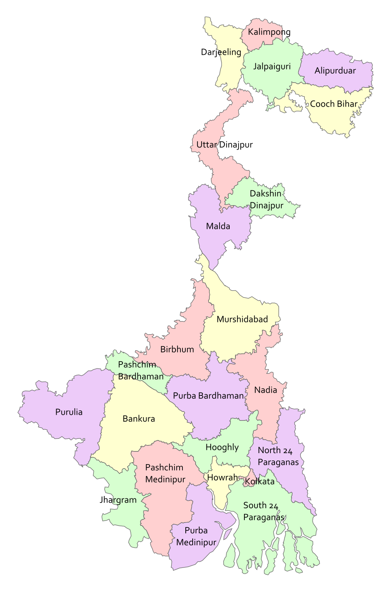

পশ্চিমবঙ্গ · West Bengal
Districts · Highlights · GI Tags
↓ Click / tap any district

GI ≤ 2012
GI 2013–2019
GI 2020+
State-wide GI
Click / tap a district
on the map or
a row in the table
All Districts — Reference Table
#
District
Region
Key Highlights
GI Tags (Year)